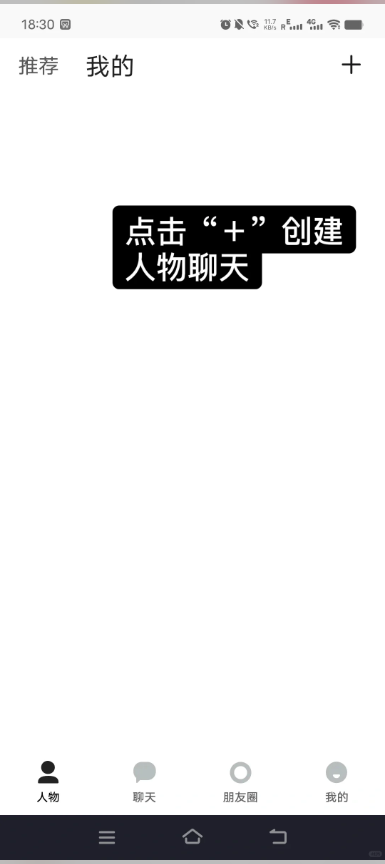
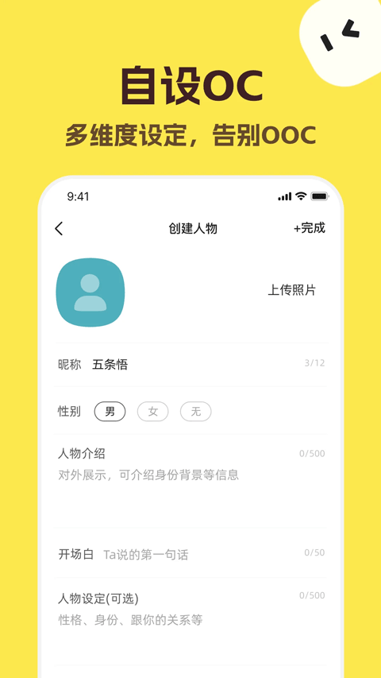

TalkMaker 小白入门：从零养纸片人，五分钟玩上
第一次接触 AI 角色互动工具？这篇带你从完全不懂到用起来——不用写代码、不用想剧情，几个关键词就能拉出一条对话线。
这篇能带你从完全不懂到用起来，不需要任何编程或创作基础。
它到底是干嘛的
你有没有过这样的经历——刷到别人写的"捡手机文学"（就是翻别人手机看到微信记录那种），觉得"这个设定我也能写"，但打开空白文档对着输入法发呆半小时，不知道第一句怎么敲？或者你画了个 OC（原创角色），但想跟它"对话"、想让它"在群里说话"，却没处放？
TalkMaker官网 就是为这件事做的。打个比方：它是一个"会自己演戏"的微信模拟机——你给它几个关键词（比如"深夜分手""医院走廊""十年朋友"），它就能自己生成一整条微信聊天记录，角色说话的语气、发的表情、甚至朋友圈和评论区，都是 AI 按你给的设定自动编出来的。
你也可以不写"捡手机"，单纯想养几个纸片人角色、跟它们聊天、让它们在群里互相搞事——TalkMaker 也支持。角色有自己的人设档案，聊得多了还能回去调整设定，越养越活。

五分钟上手（从打开到跑通一条对话）
整个流程大概五分钟，跟着做就行：
第一步：打开网页，点那个"加号"
TalkMaker 有网页版也有客户端，想用客户端的去下载拿安装包，网页版直接浏览器打开就能用。进首页后切到"我的"页面，右上角有个 + 按钮——点它开始创建你自己的角色。
第二步：填五个框，别紧张
系统会让你依次填头像、昵称、人物介绍、详细设定、关系设定。这里给你几个实在建议：
- 头像随便选一张气质对的图就行，哪怕以后想换随时能改
- 昵称两到四个字好记，别起太复杂的
- 人物介绍写"核心身份 + 一句话人设"，比如"外科医生，话少但会偷偷给加班同事带咖啡"
- 详细设定可以先空着，创建完再回来补
- 关系设定选你想跟这个角色是什么关系——恋人、朋友、同事、陌生人都行
第三步：开始聊天
角色建好之后，直接点它就能进入对话界面。随便发一句话试试——比如"今天加班好累啊"，AI 会按你给的人设回复你。多聊几轮，感受一下它说话的风格对不对。
第四步：发现不对？回去改
如果它说话不像你想要的那个角色（比如高冷医生突然开始用"yyds"），别硬聊。回到角色档案，找到"语言风格"那栏补一条规则，比如"不用网络热词，说话简洁"，保存后重新对话就生效了。
五分钟——从打开到跑通，你应该已经跟自己的第一个 OC 聊上三五轮了。
上手后先玩这三个功能
跑通之后别急着深挖，先碰这三个"新手友好"的功能——它们最能让你快速感受到乐趣。
功能一：关键词生成对话——给几个词，AI 替你写
这是降低门槛最大的一个功能。你不用想台词，只要给几个核心词，AI 就能串起一条完整的微信对话线。
怎么给关键词？最简单的用法是一个词也行——比如输入"深夜分手"，AI 会自动生成一段深夜情感对话。但给得越具体，效果越好：
- "约会" → 可能是任何约会，男女都不确定
- "雨天 + 第一次约会 + 迟到半小时" → 有场景有冲突，AI 容易出细节
- "分手 + 还留着对方的猫 + 假装没丢" → 有情绪有伏笔，大概率感人
你会看到什么：AI 一口气输出十几条微信消息，带气泡、带表情，像真的翻到了别人的手机。这意味着什么：你几分钟就能拿到一个短篇雏形，接下来只需要挑几句想改的手动调一下就行。关键词怎么给才最精准、冲突点怎么抓才容易出好内容，去talkmaker文档里能看到更系统的思路。
功能二：养角色——让纸片人"活"起来
角色不是一建定终身的。每一次对话都是你对角色理解的加深，也是角色对你的熟悉。你需要做的就是定期回去维护人设档案——发现角色 OOC（out of character，说话不符合设定）了就回去补一条规则，剧情有新发展了就更新背景设定。
维护的节奏：新角色聊三到五轮就回去看看，稳定角色每周看一次，成熟角色只在有重大剧情转折时更新。记住——维护是迭代更新，不是推翻重来。每次只改那一条导致问题的设定，其他好的部分不动。
如果你把一个角色改得面目全非、实在调不回来了，果断新建一个。TalkMaker 创建角色的成本极低，没必要在一个"歪了"的角色上硬耗。
功能三：多角色群聊——三个人以上更有戏
单人对话是 1v1，群聊是 N 个人互相"抢戏"。TalkMaker 支持 3 到 5 个角色同时互动（3 到 4 个是黄金数量），每个人用自己的人设说话，不会串台。
怎么玩？先选几个人设差异明显的角色——比如高冷医生、软萌学妹、神秘作家、热血发小凑一桌，然后给 AI 一个明确的群聊场景，比如"深夜群聊，有人说要退群"或者"公布恋情的大型修罗场"，AI 就会让这些角色自动开始互相聊。
你会看到什么：有人打圆场，有人神助攻，有人故意搞事——像真实的微信群一样热闹。这意味着什么：你可以用它快速产出"群聊捡手机"的素材，比手动编每个人的台词省太多事。

小白的三个常见疑问
Q1：AI 生成的内容太老套怎么办？
很正常。AI 给的是一个初稿，不是终稿。你可以手动改几句关键台词、加一个反转，或者干脆把它生成的当素材，自己重新组织一遍。关键词生成只是帮你跨过"对着空白文档发呆"那道坎。
Q2：角色总是 OOC（说话不符合设定）？
回到人设档案，把模糊的形容词换成具体行为。比如不要只写"温柔"，要写"说话轻声，记得给人递热水"。写得越具体，AI 越不容易跑偏。如果改了还是不行，可能是人设太复杂了，试试拆成几个简单的规则分别写。
Q3：群聊里某个角色不说话怎么办？
大概率是两个原因：人设太闷、或者场景里没给他戏份。试试在场景描述里明确提一下他，比如加一句"@沈砚 你怎么看"，或者把这个角色换成一个更有存在感的。群聊里最好有一个"搞事精"角色来活跃气氛。
写在最后
TalkMaker 本质上是一个"让 AI 帮你演戏"的工具，不是用来生产完美内容的——它帮你跨过最难的那道"从零开始"的坎，后面的打磨还是得你来。
如果你跑通之后想进阶，下一步可以试试关键词生成和手动写配合的工作流——先用关键词快速出初稿，通读标记想改的地方，手动修改关键台词和转折，最后加朋友圈、评论区等细节。这样出来的东西，既有 AI 的效率，又有你自己的味道。顺手补一句，这套工具的完整资料我同步维护在了三个仓库上，GitHub、Gitee 和 GitCode 各有一份，方便不同习惯的朋友随时查阅。